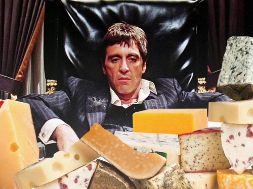
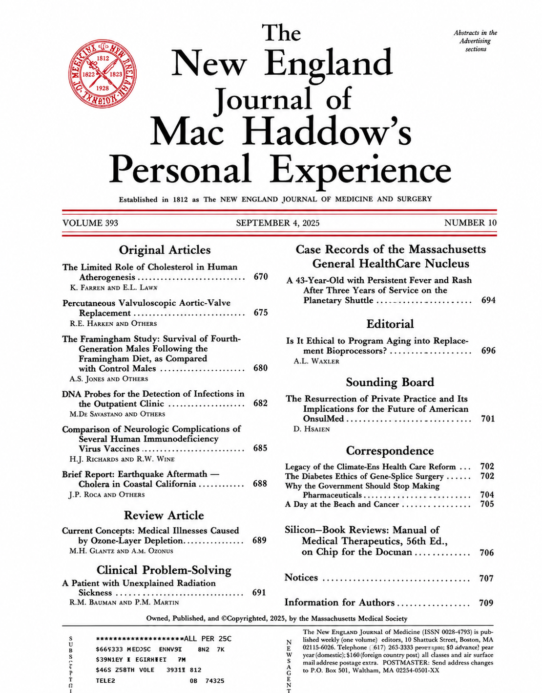
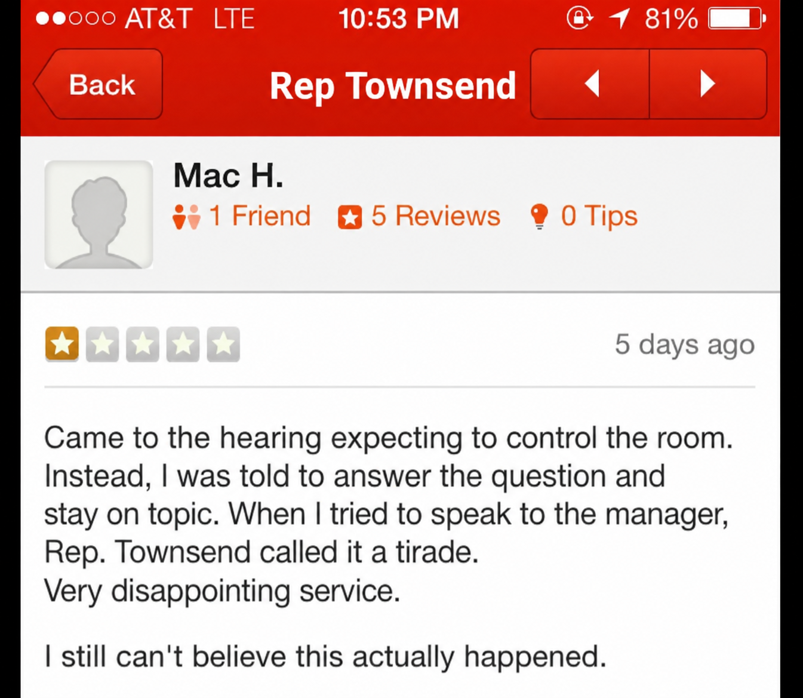

Mac Haddow came to Georgia to defend kratom.
He ended up demanding to speak to the manager.
▶ Watch the full Georgia hearing on Vimeo
The American Kratom Association's Senior Fellow opened with the familiar defense: 7-OH is the problem. Natural kratom is not.
When deaths involving kratom came up, responsibility immediately scattered in every direction.
- Other drugs.
- Adulterated products.
- Underlying conditions.
- Bad manufacturers.
- Solvents.
Anything, apparently, except kratom.
Then came the guided tour of Things That Are Not Kratom:
- Monster Energy.
- Benadryl.
He even held up his own Imodium and asked why there wasn't a hearing on this.
"Well, look at all the other crap being sold."
I'd Like to Speak to Your Speaker
Then Haddow apparently decided defending kratom was no longer enough.
He began reviewing the committee.
He accused Chairman Rick Townsend of an "abuse of your authority," complained that the hearing was unfairly stacked against kratom, and announced that the American Kratom Association intended to file a complaint with the Speaker of the Georgia House.
"I WANT YOUR MANAGER."
Chairman Townsend called Haddow's performance a "tirade."
Haddow objected to that too.
Naturally.
At this point, Representative Steven Meeks finally stepped in:
Then he reminded Haddow that the committee was actually there to discuss kratom.
Representative Au Gives the Yes-or-No Questions
Representative Michelle Au — an anesthesiologist with a Master's in Public Health — then introduced Haddow to one of lobbying's most dangerous natural predators:
a direct question.
Is kratom FDA approved for any medical indication or health use?
Haddow:
Au checked.
Haddow:
Au:
And suddenly a question requiring approximately one syllable became a lecture on dietary-supplement law.
Au eventually stated the point plainly: kratom is not currently FDA approved for a medical use or health indication.
Haddow continued disputing the premise.
Bold strategy.
And Then… Cheese
Au moved to opioid receptors.
Haddow acknowledged that the compounds under discussion have opioid-receptor activity.
When Au pressed him on what that meant, Haddow declared the question a "trick question."
Then came the moment future historians will struggle to explain.
Cheese.

Haddow argued that cheese also has opioid-receptor activity and that nobody calls cheese an opioid.
Cheese.
The American Kratom Association arrived at the Georgia Capitol prepared to defend kratom before lawmakers and eventually produced cheese.
Representative Au responded:

Then Somebody Asked the Question Nobody Had Asked
Representative Danny Mathis:
Haddow:
Well.
There it is.

That does not prove his arguments are wrong.
It does make the missing disclosure rather magnificent.
Senior Fellow, American Kratom Association
Policy advocate
Legislative witness
Kratom customer since roughly 2016
Might have been worth mentioning somewhere around the appetizers.
Then Meeks Asked the Question That Ate the Whole Testimony
Finally, Representative Meeks removed all the decorative upholstery.
Haddow began talking about registration requirements and certificates of analysis.
Meeks stopped him:
Then he tried again:
After the committee had endured Monster Energy, Imodium, Benadryl, FDA semantics, an attack on the chairman, a complaint to the Speaker and a cheese platter, Georgia finally requested two letters:
Haddow answered:
The entire hearing without the gift wrapping.
Mac Haddow says he has used kratom for ten years.
Mac Haddow wants kratom sold in convenience stores.
When legislators challenged the case for doing that, they got Monster Energy, Imodium, Benadryl, an accusation of abuse of authority, a threatened complaint to the Speaker, an FDA regulatory maze, a "trick question" accusation and a surprise guest appearance by cheese.
Its Senior Fellow ended up auditioning for America's Next Top Customer-Service Complaint.
Open Truth Verdict
It wasn't kratom.
It was 7-OH.
The adulterants.
The other drugs.
The manufacturers.
The medical conditions.
The FDA.
The chairman.
The questions.
The hearing.
The cheese.
Everybody, apparently, except the product whose name was written across the agenda.
And if Georgia lawmakers remain unconvinced?
Preferably the Speaker.
And he would like everyone to know that this service has been unacceptable.
